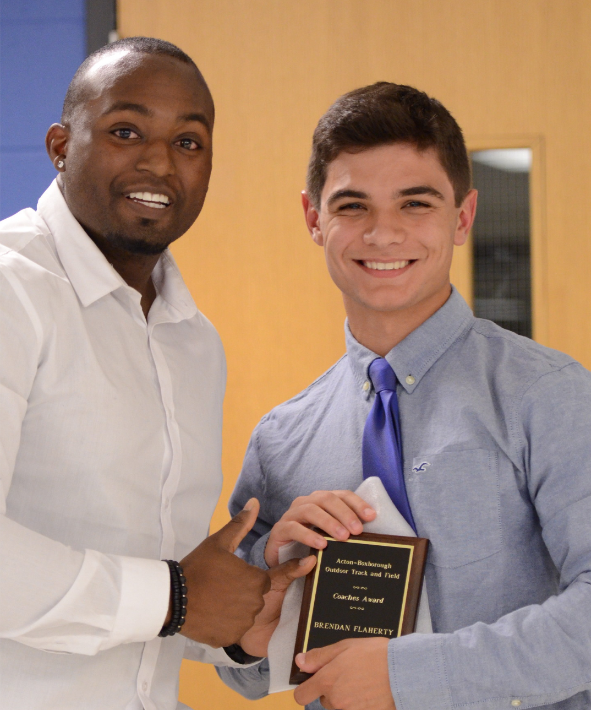

Brendan Flaherty
Sports/Athletics
Home Page
Track:
I got started with Track after my first highschool season of soccer, my father suggested i should do it to stay in shape so I signed up and the Coach really liked me.
I didn't particularly like racing ever, not even to this day, however I came to be pretty good at it if I applied myself which I found out my senior year.
My senior year was likely the highest athletic acheivment I ever received adnd probably will receive in my life. Myself and three other teammates got the oppurtunity to run at the New Balance Indoor Natioal Championship.
Our event was the Sprint Medley relay, an once our anchor leg crossed the finsh line the announcer had exclaimed we just ran the fastest SMR in US history. My teammates and I went wild! Unforturnatley two teams that ran later did beat our time,
however we still received third place in the nation and were all named All-American athletes.
|  |
This is one of my coaches DJ, he was a huge part of my success not only in track but in all sports I played because he always was helping me train year round.
In the image shown he is presenting me with an award which he called the "Beast award" at my final senior track banquet. |